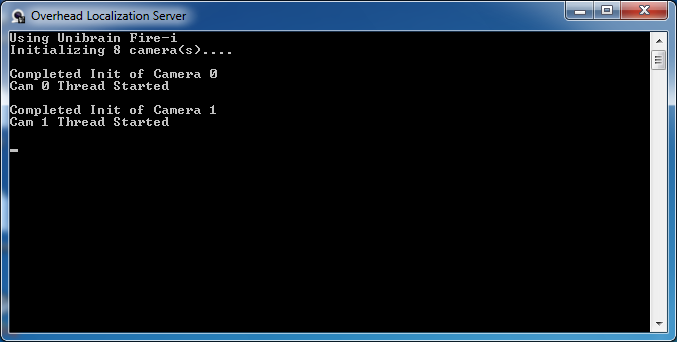
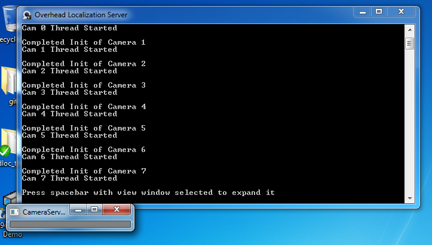
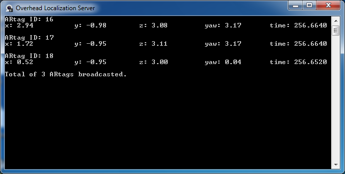
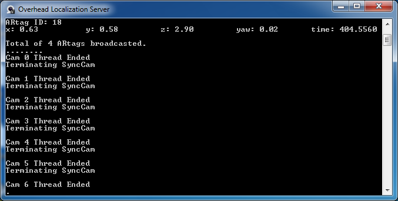

Overhead Localization System User Manual |
Quick Link:
Requirements
Specifications
Before you start
Ready for action
Camera Initialization
Calibration
Intrinsic parameters
Extrinsic parameters
Broadcast ARtag pose
Quiting the program
ARtag generation
Troubleshooting
Requirements
OpenCV2.2
CMU1394Camera driver
Windows 7 32bit
Unibrain Fire-i cameras
Specifications
| Resolution: | 640 by 480 each camera |
|---|---|
| Error: | +- 5 cm in both x and y |
| +- 0.1 rad in yaw |
Before you start
Make sure firewire cables are connected to the overhead localization system correctly.
Check number of cameras under Device Manager (shortcut on desktop). You should get 8 normally.
If you think you are missing a camera or two, disconnect the 2 firewire cable from the firewire hub and reconnect it, this should correct the problem.
Ready for action
Double click on the "Overhead Localization Server" shortcut on the desktop. This opens up the program's console. The message printed in the console (Initializing # camera(s)....) indicates the number of cameras you have currently attached to your computer. If it's different than what you think you should have, close the program and double check the hardware connection.
Camera Initialization
Wait for the 8 cameras to be initialized. This should take some time, be patient.

When all 8 cameras are initialized, you will see the console looks like following picture.

In addition, one more window will be created (titled CameraServ...), select the view window and press [spacebar] to expand/hide this view window. When the view window is expanded, you will be able to see the view of all 8 cameras. In the view window, any ARtags localized by the program will display a red colored text with ID number and its pose (x,y,yaw) next to the ARtag. Following image shows an uncalibrated camera extrinsics. Note that the pose showed in the image is with origin at each camera's focal center before camera extrinsic calibration.
{kind=link}
Calibration
There are 2 kinds of camera calibration for the system, find out the camera intrinsic parameters and extrinsic parameters.
Intrinsic parameters
One can use MATLAB's calibration tool box that can be found in this website to find out the intrinsic parameters and obtain camera's focal length, focal center, distortion coefficients and obtain an ASCII-file containing the camera intrinsic parameter (example). More detail can be found on the bottom section of ARToolKitPlus' website. Place the ASCII-file containing the camera intrinsic parameter under tdloc_trunk\ARToolKitPlus\data\ and modify ARtagLocalizer.c's init function to load such file properly. Then recompile and build the program. Note: The user usually doesn't need to recalibrate the intrinsic parameter if one uses the same model of cameras.
Extrinsic parameters
There are 8 cameras that's being used by the program. So one needs to find out the relative position between each camera's coordinate frame. Such calibration is built-in with the Overhead Localization Server program. User can press [C] to calibrate this anytime after the cameras are initialized.
Place a couple of ARtags under the cameras so that it shows the tag is visible and the ARtag IDs are displayed in the camera view. User should place the ARtags in the overlapped region between two cameras in order for the program to calculate the relative camera offsets. When there is no tag with same ID that's placed in two cameras' overlapped region, the console displays "Trying again..." to notify user to place some more ARtags in the field and make sure it can be seen by two nearby cameras.
{kind=link}
The origin of the world coordinate is set to be where the ARtag ID 0 is located. If no ARtag with ID 0 is located in the camera field of view, then the origin of the world cooridinate is set to be the focal center of the camera 0 (the camera that provide the top left view in the view window). In order to know that the camera extrinsics is calibrated, user has to inspect the ARtag poses displayed in the view window. For example, in following image, ARtag 18, 17, and 16 are placed 1.20 m apart in x direction. So their pose displayed in the view window should also agree (or close to) with real world measurement.
{kind=link}
Note: It is recommanded that user placed lots of ARtags in two camera's overlapped region so that the camera can be calibrated with less effect from len distortion (eventhough the len distortion is virtually removed from the calibration of camera intrinsics). The program averages the offsets calculated from the ARtags in the overlapped region.
{kind=link}
Broadcast ARtag pose
With the view window selected, press [V] to go into program's normal operation mode. The console will then display the pose information with timestamps of current ARtags that are been localized by the cameras. "Total of # ARtags broadcasted." message printed in the console also indicate the number of ARtags pose information with timestamp that are being broadcasted to the network through UDP. With the view window selected, user can press [B] to toggle the broadcasting of the pose message.

Quiting the program
With the view window selected, press [Q] to quit the program. The console will display something looks like following indicating a proper termination of the camera threads and firewire driver:

ARtag generation
Run the windows command prompt and cd under tdloc_trunk\ARToolKitPlus\. Run IdPatGen.exe without any argument after the command to display help instruction for the program. For the Overhead Localization Server, it is compatible with ARtags that has width of 200 cm, thin border, and BCH marker system. So an example of the command to generate the ARtag with ID 0 looks like following:
IdPatGen -thinborder -w 200 -bch 0 myartag

Then an ARtag with filename of "myartag_0000.tga" will be generated under the same directory. To print out the ARtag, one can open the .tga file with Quicktime player and print. When it is printed, measure the width of the tag to make sure the width is 200 cm.
Troubleshooting
- Hardware
- Software